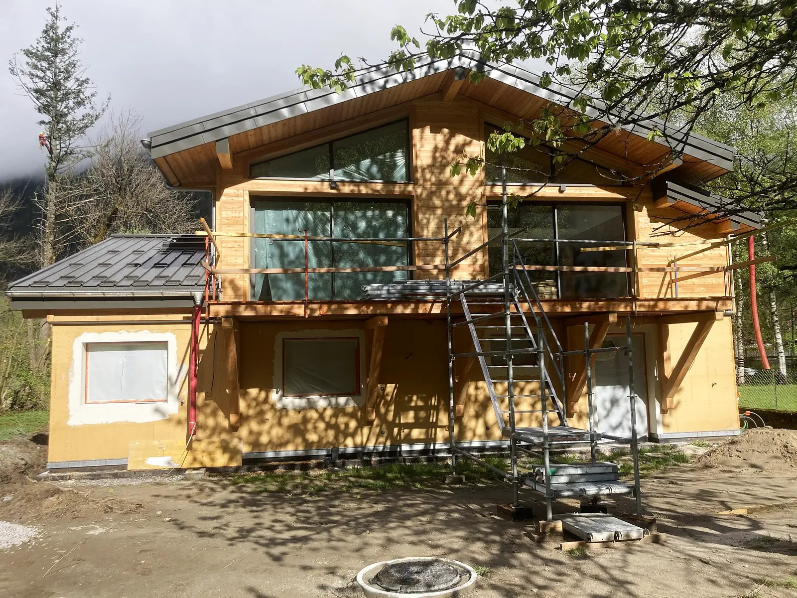

Douglas
Résineux robuste cultivé en France, naturellement durable. Idéal pour la charpente, l'ossature et le bardage.

Une extension en ossature bois, c'est une construction saine, légère et rapide à mettre en œuvre, qui s'intègre avec élégance à votre maison.
Extension de plain-pied, surélévation ou annexe : nous concevons l'ossature sur mesure, en tenant compte de l'architecture de votre maison et de son environnement. La construction bois est légère, ce qui limite les fondations, et le chantier reste propre, car une grande partie du travail est préparée à l'avance.
L'ossature se marie naturellement avec des isolants biosourcés, comme la fibre de bois, et avec un bardage en bois local. Chaque détail est soigné, de l'étanchéité à l'air jusqu'aux finitions.

Pour une ossature et son bardage, le Douglas et le châtaignier, deux essences locales, sont des choix naturels. Nous utilisons du bois de réemploi dès que c'est possible.
Résineux robuste cultivé en France, naturellement durable. Idéal pour la charpente, l'ossature et le bardage.
Le bois noble de la charpente traditionnelle : dense, solide, superbe en poutres apparentes.
Résistant aux intempéries sans traitement chimique : bardages, terrasses, ouvrages extérieurs.
Bois clair, dense et élégant, apprécié notamment pour les terrasses.
Dès que c'est possible, nous donnons une seconde vie à des bois de qualité : moins de déchets, et des pièces qui ont une histoire.
En règle générale, une déclaration préalable suffit jusqu'à 20 m² créés, ou 40 m² dans une zone urbaine couverte par un plan local d'urbanisme (sous conditions). Au-delà, un permis de construire est nécessaire. Les règles varient selon les communes et les secteurs protégés : nous vous aidons à vérifier ce qui s'applique chez vous.
Oui. Bien conçue et bien protégée de l'humidité, une ossature bois dure aussi longtemps qu'une construction traditionnelle. Le soin apporté aux détails (ventilation, pare-pluie, débords de toit) fait toute la différence.
Tout dépend de la taille du projet. Comme une grande partie du travail est préparée à l'avance, le temps passé chez vous est souvent plus court qu'avec une construction maçonnée. Nous vous indiquons la durée prévue avec le devis.
Nous venons voir votre maison, écoutons votre projet, puis vous remettons un devis détaillé, poste par poste.